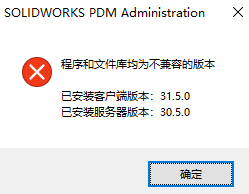
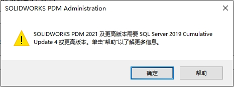
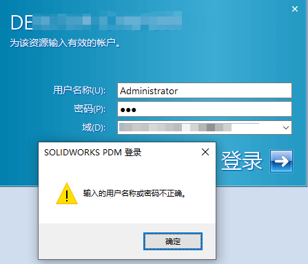
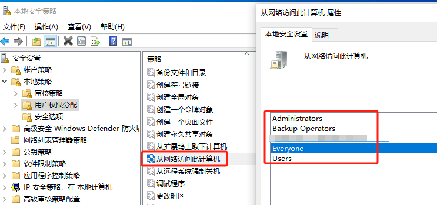

SOLIDWORKS安装向导
包括 SOLIDWORKS 本体单机版，网络版，插件类以及 PDM 的安装向导
配置要求：
注意：安装前，需检查当前电脑配置是否支持SW的安装环境（详细见下方配置要求参考）。
SOLIDWORKS官网系统要求
SOLIDWORKS官网硬件认证
SOLIDWORKS硬件配置参考
普吉网站的选配参考
PDM 安装
注意：安装前，需检查当前服务器配置是否支持PDM的安装环境（详细见#配置要求）。
1、安装SQL服务器
..\SQLsetup.exe
2、安装PDM服务器
..\SOLIDWORKS 20xx SP05 安装包\SWPDMServer\setup.exe
3、安装PDM客户端
..\SOLIDWORKS 20xx SP05 安装包\SWPDMClient\setup.exe
PDM 升级
注意：升级前，建议检入所有文件；备份数据库和 PDM 数据库，升级后功能使用测试。本章默认只考虑在原 PDM 服务器下升级，如需进行 PDM 迁移阅读下文“SOLIDWORKS PDM 迁移”。
1、升级PDM服务器
..\SOLIDWORKS 20xx SP05 安装包\SWPDMServer\setup.exe
2、升级PDM库文件
..\SOLIDWORKS 20xx SP05 安装包\SWPDMServer\Upgrade\Upgrade.exe
3、升级各客户端
..\SOLIDWORKS 20xx SP05 安装包\SWPDMClient\setup.exe
Q&A
ODBC Driver17
可在如下文件夹内找到安装程序，安装后再运行PDM安装程序
1 | D:\SOLIDWORKS安装包\PreReqs\ODBCSQLDriver17 |
不兼容的版本
需检出当前客户端和服务器的版本，并尝试修改客户端的版本。这里涉及客户端PDM的卸载和安装操作（详见#安装说明）
需要SQL更高版本
要在 Microsoft® SQL Server 2019 或 Microsoft® SQL Server Express 2019 上创建或升级文件库数据库，SOLIDWORKS® PDM 软件需要“SQL Server 2019 Cumulative Update 4”或更高版本。更新 SQL Server 安装，请执行以下步骤：
1.安装 SQL Server 2019 或 SQL Server Express 2019 RTM（“SP0”）。
2.从 Microsoft.com下载 最新 SQL Server Cumulative Update。
3.在包含 SQL 2019 安装的同一计算机上运行更新程序文件。
4.继续创建 PDM 库的流程。
（要运行较旧的 SQL Cumulative Update（至少为“CU4”），您可以从 Microsoft 更新目录 (https://www.catalog.update.microsoft.com/Search.aspx?q=sql%20server%202019) 中选择其他内容）
密码不正确
首次安装 SOLIDWORKS PDM 客户端后，必须在 PDM 管理中识别存档服务器。

加载项服务器到客户端计算机。将客户端计算机连接到存档服务器时，将登录的用户配置文件与用户配置文件的“附加访问权限”和“管理访问权限”进行比较。如果用户配置文件凭据不匹配，系统将提示用户登录 PDM 存档服务器。
客户端添加服务器连接失败，输入的用户名或密码不正确
需确保在网络访问到服务器的电脑用户存在，并由密码设置（空密码好像是不行的）
